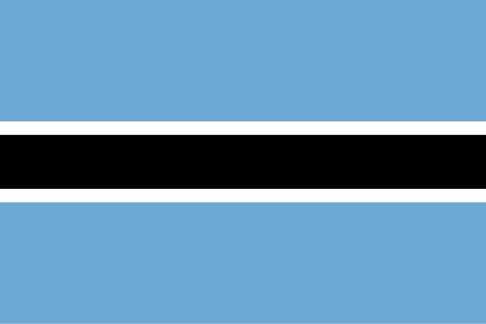

Kgosiphenyo K. Boabilwe
About Me
My name is Kgosiphenyo, but I go by Kgosi (or Kevin to non-Setswana speakers). I was born in Gaborone, the capital city of Botswana. I am an online student at BYUI through Pathway. I am the firstborn of three and I live with my first sibling and our mother.
Botswana

Botswana is a landlocked country in Southern Africa neighbored by South Africa, Namibia, Zambia & Zimbabwe. It is known for its diamond exports and has the world's largest population of elephants.